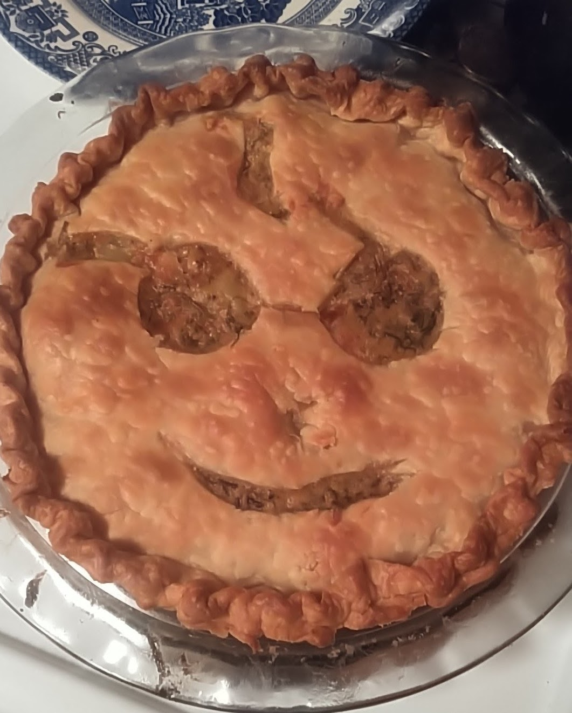

korb wuz here
Venison Pot Pie
I don't claim to be an artist. My Potter (Venison) Pot Pie is... almost art? And it's delicious. It's probably the greatest thing these two hands have ever created.

Ingredients:
- 2-3 medium potatoes
- 3 stalks celery
- Small can of sweet corn
- 1 white onion
- 3 cloves garlic
- 1 large carrot
- Venison roast
- Vegetable broth
- Pie crust mix
What do?
- Preheat oven to 375°F
- Make the roux! Chop onion, garlic, carrots, and celery. Saute with 1 tbsp oil over medium heat until soft. Set aside
- Dice potatoes and toss in 2 tbsp olive oil, salt, and pepper and bake for 40 mins at 375°F.
- In a few tbsp oil, sear all sides of the venison roast. Bake at 375°F for 10 mins per inch of thickness.
- While roast and potatoes finish baking, make pie crusts (top and bottom) and roll out to desired size. Grease pie pan and add bottom crust.
- Cut roast into bite-sized pieces. Set aside.
- Add potatoes, then roux, then venison to pie. Top with corn from can and mix pie contents carefully and lightly.
In the pan that you seared the roast, add 1 cup vegetable broth and 2 tbsp balsamic vinager. Whisk in 2 tbsp flour and cook down to a gravy.
- Pour the gravy over the pie, distributing as evenly as possible. Don't overdo it, you don't want a soggy bottom!
- Add top pie crust. Pinch edges to seal, and try your damndest to make a design that doesn't look like garbage.
- Bake at 375°F for 30-45 minutes. Crust should be golden brown.
- Let cool, shove in your pie-hole.